2026-W48 · 2026.11.25 KST 수집
GitHub 주간 Trending에 오른 저장소 중 주간 스타 수로 집계한 순위입니다.
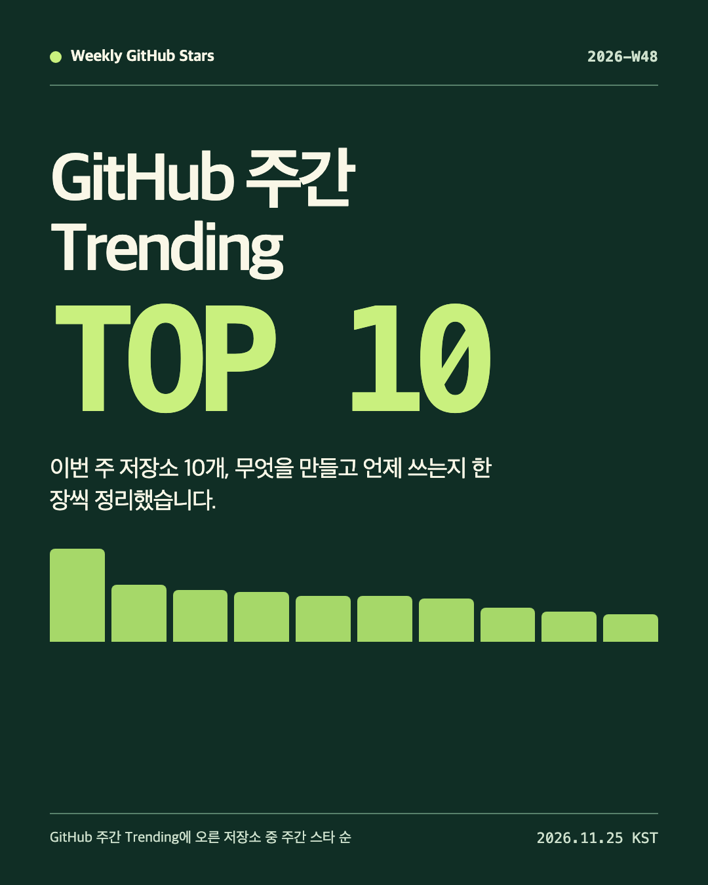
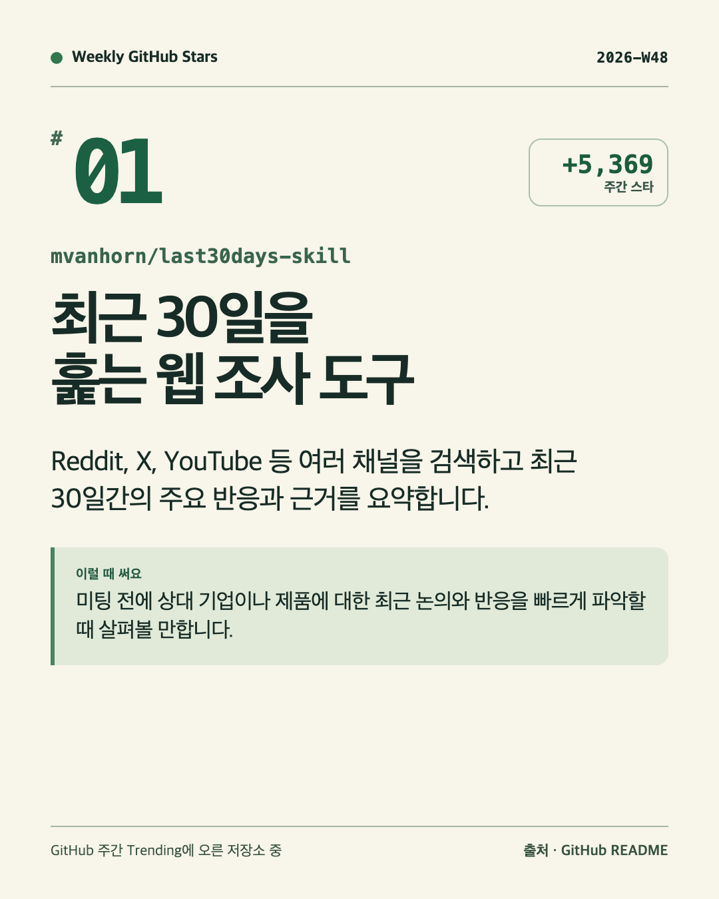
Reddit, X, YouTube 등 여러 채널을 검색하고 최근 30일간의 주요 반응과 근거를 요약합니다.
미팅 전에 상대 기업이나 제품에 대한 최근 논의와 반응을 빠르게 파악할 때 살펴볼 만합니다.
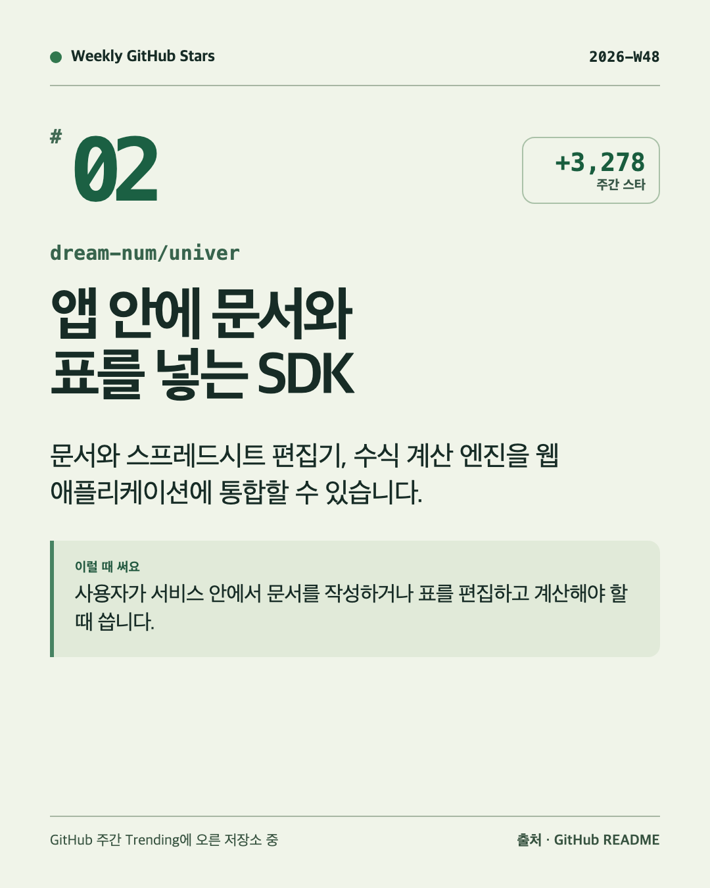
문서와 스프레드시트 편집기, 수식 계산 엔진을 웹 애플리케이션에 통합할 수 있습니다.
사용자가 서비스 안에서 문서를 작성하거나 표를 편집하고 계산해야 할 때 씁니다.
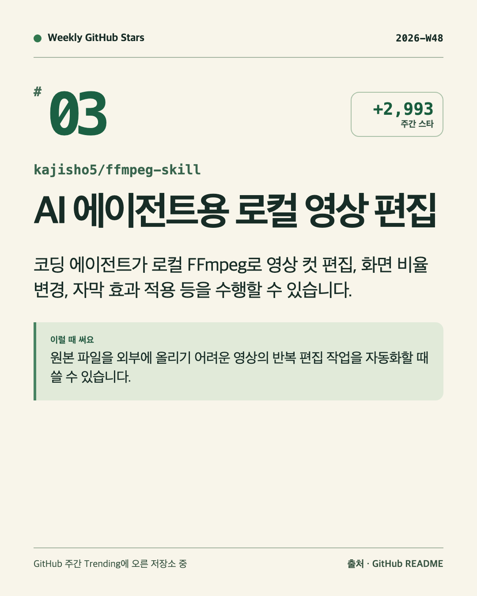
코딩 에이전트가 로컬 FFmpeg로 영상 컷 편집, 화면 비율 변경, 자막 효과 적용 등을 수행할 수 있습니다.
원본 파일을 외부에 올리기 어려운 영상의 반복 편집 작업을 자동화할 때 쓸 수 있습니다.
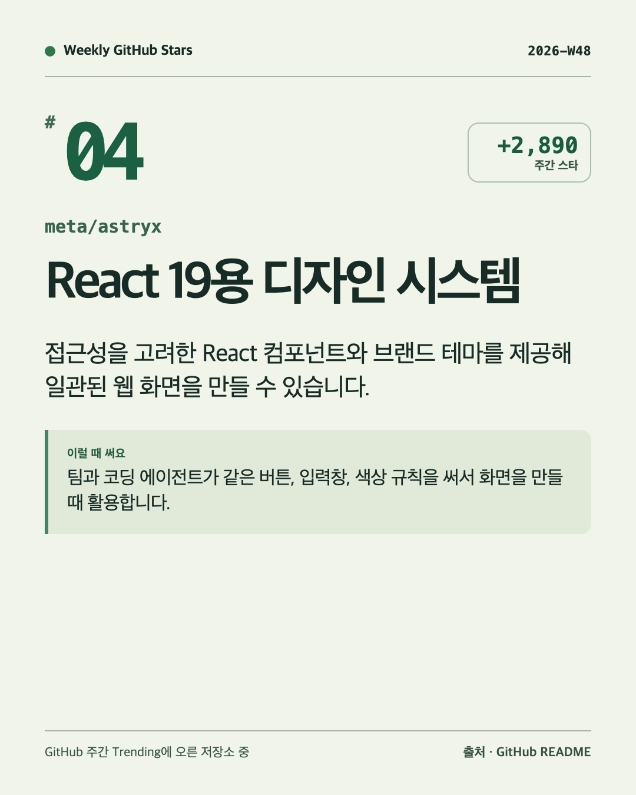
접근성을 고려한 React 컴포넌트와 브랜드 테마를 제공해 일관된 웹 화면을 만들 수 있습니다.
팀과 코딩 에이전트가 같은 버튼, 입력창, 색상 규칙을 써서 화면을 만들 때 활용합니다.
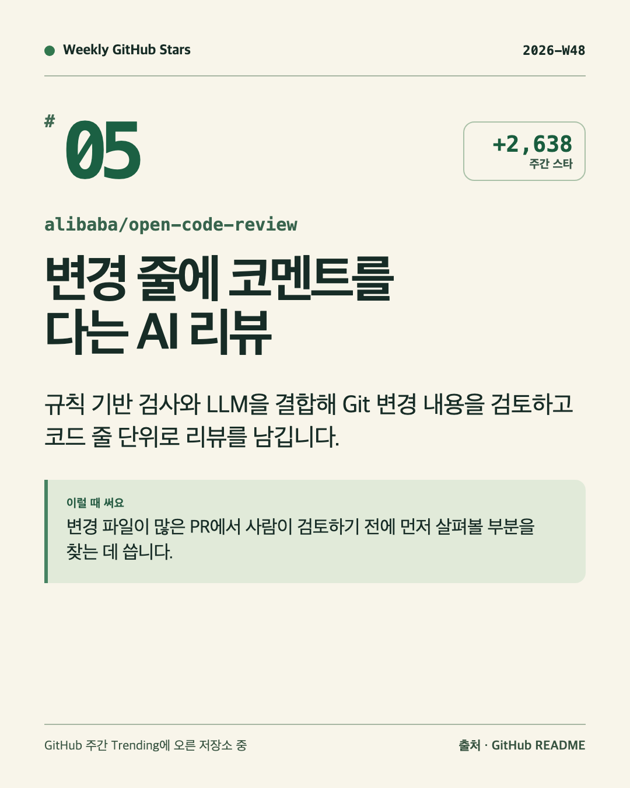
규칙 기반 검사와 LLM을 결합해 Git 변경 내용을 검토하고 코드 줄 단위로 리뷰를 남깁니다.
변경 파일이 많은 PR에서 사람이 검토하기 전에 먼저 살펴볼 부분을 찾는 데 씁니다.
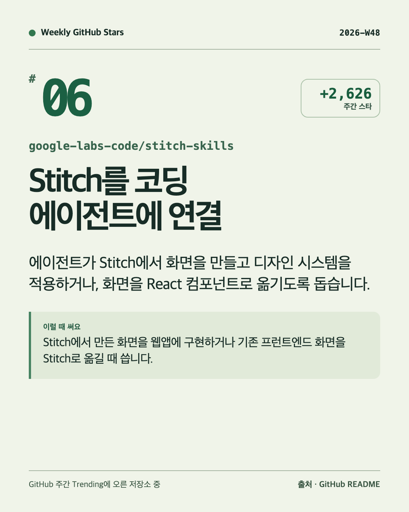
에이전트가 Stitch에서 화면을 만들고 디자인 시스템을 적용하거나, 화면을 React 컴포넌트로 옮기도록 돕습니다.
Stitch에서 만든 화면을 웹앱에 구현하거나 기존 프런트엔드 화면을 Stitch로 옮길 때 씁니다.
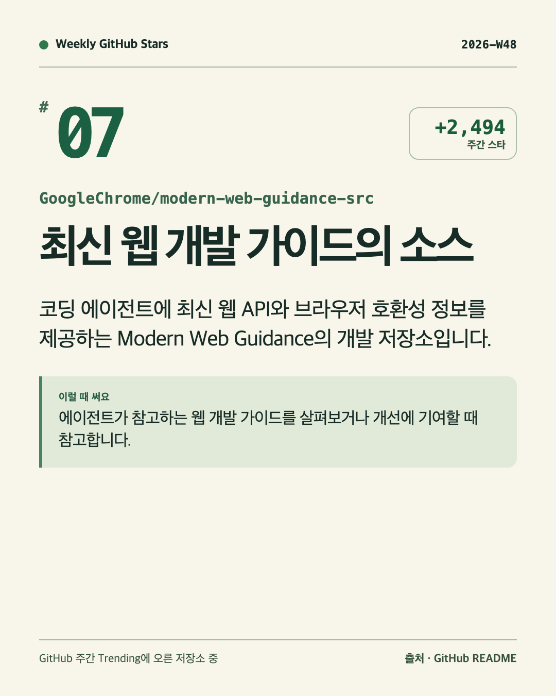
코딩 에이전트에 최신 웹 API와 브라우저 호환성 정보를 제공하는 Modern Web Guidance의 개발 저장소입니다.
에이전트가 참고하는 웹 개발 가이드를 살펴보거나 개선에 기여할 때 참고합니다.
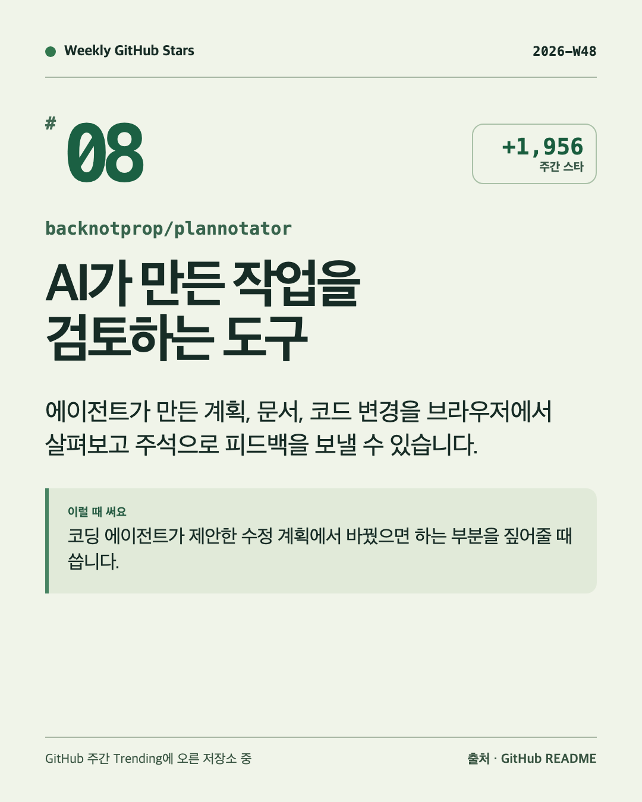
에이전트가 만든 계획, 문서, 코드 변경을 브라우저에서 살펴보고 주석으로 피드백을 보낼 수 있습니다.
코딩 에이전트가 제안한 수정 계획에서 바꿨으면 하는 부분을 짚어줄 때 씁니다.
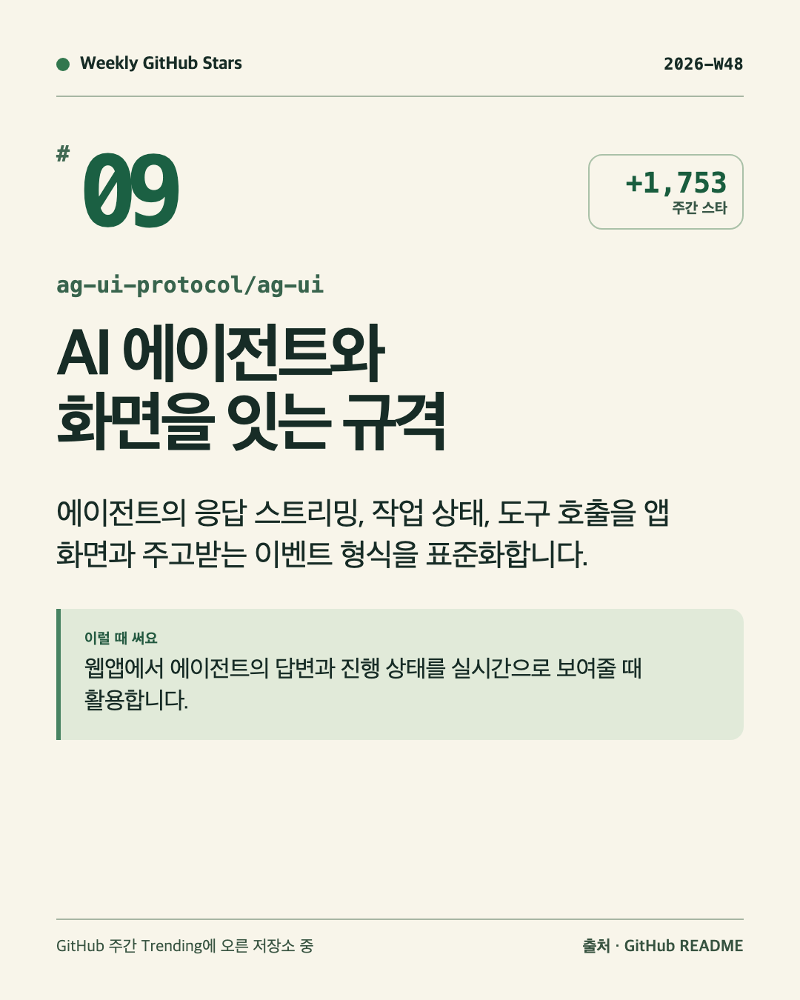
에이전트의 응답 스트리밍, 작업 상태, 도구 호출을 앱 화면과 주고받는 이벤트 형식을 표준화합니다.
웹앱에서 에이전트의 답변과 진행 상태를 실시간으로 보여줄 때 활용합니다.
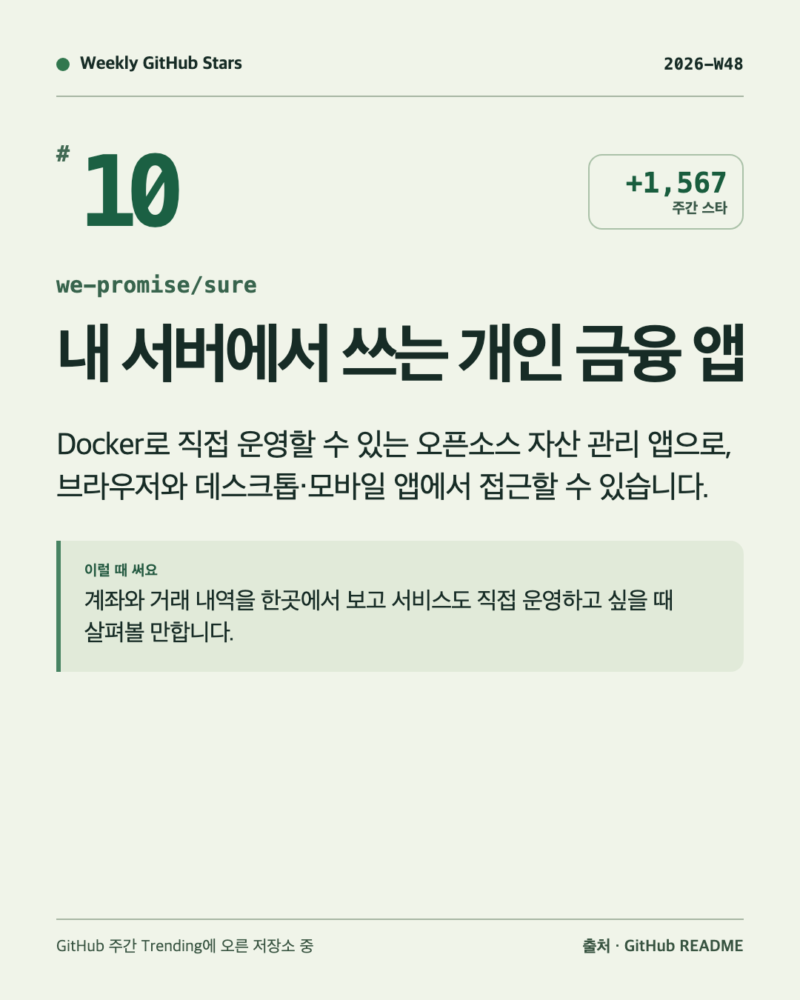
Docker로 직접 운영할 수 있는 오픈소스 자산 관리 앱으로, 브라우저와 데스크톱·모바일 앱에서 접근할 수 있습니다.
계좌와 거래 내역을 한곳에서 보고 서비스도 직접 운영하고 싶을 때 살펴볼 만합니다.